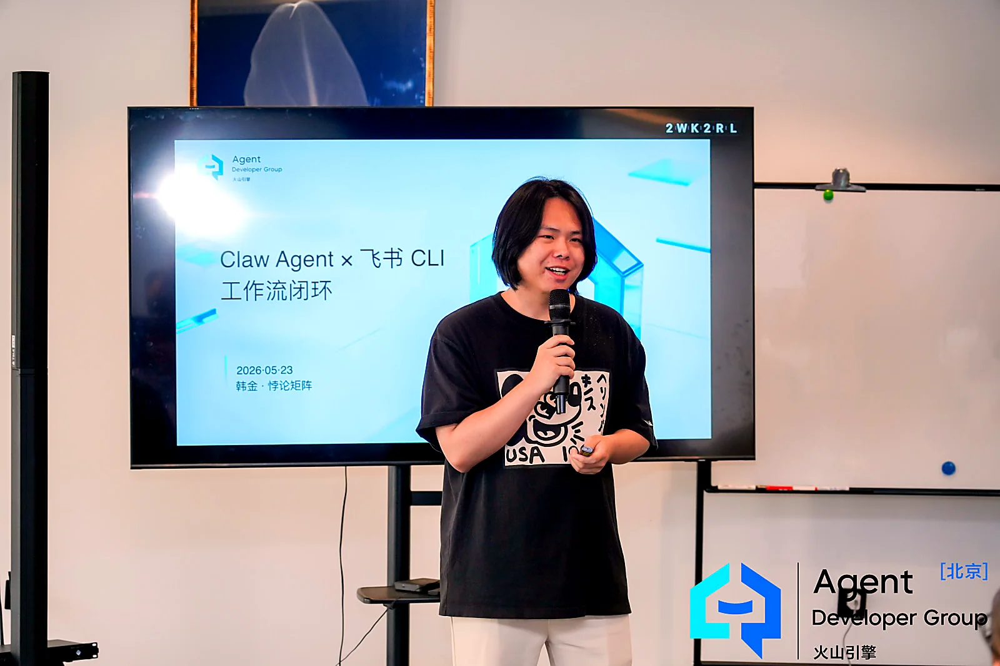

业务目标与交付路径
面向零售运营、数据处理和内部协同需求，拆解业务问题、输入条件、关键节点与阶段产出，亲自参与原型和流程构建。
AI Product & Field Delivery / Han Jin
从业务需求拆解、方案设计到 Agent 与自动化流程构建，亲自验证原型，并推动业务方、研发与外部伙伴协同交付。
进入业务现场，拆解需求、连接系统、验证结果；以 FDE 方向寻找下一段实践。
Recent Experience / 2026.07—2026.09
最近一段工作担任 AI 团队负责人，带领两名成员，负责需求讨论、方案设计、关键节点拆解与跨团队推进，覆盖零售运营、数据处理与企业内部协同。
面向零售运营、数据处理和内部协同需求，拆解业务问题、输入条件、关键节点与阶段产出，亲自参与原型和流程构建。
按任务特点组合模型能力、Python、RPA、API 与飞书多维表格；关注跨系统衔接、数据回写与异常处理，而非仅完成聊天演示。
协调业务使用方、组员及外部技术伙伴，维护项目与节点跟进表；在实践中持续改进需求对齐、优先级判断和结果验收。
企业项目按已完成、业务验证与持续迭代分别管理。受保密约束的案例不在公开页面展示，具体披露以授权范围为准。
Selected Work / Public Evidence
以下为个人公开作品与探索，和上述企业工作经历分开呈现。项目说明明确区分实验、原型与独立上线产品。
Execution Engine
从使用者、数据条件与交付要求出发，选择合适的技术路径，再验证流程是否真正可用。
01 / Business Field
我从西南连锁宠物店经营里看到：客户复购、销售跟进、会员沉淀和库存运营，不是一个“AI 聊天”能解决的问题。
AI Full Stack
明确谁使用、解决什么问题、需要哪些数据，以及什么证据能说明方案有效。
让 Agent 调用工具、读写系统、触发流程；用 RPA 补齐浏览器和业务软件里的执行断点。
能从原型、前端、后端、数据结构一路做到 MVP 上线。
火山引擎 Agent 开发者社区讲师，把复杂系统讲成团队能用的方法。
Operating System
我更关心系统是否能进入日常经营：从业务诊断、数据结构、Agent 执行到产品交付，每一步都必须能被团队复用。
确认增长目标、流程断点和可自动化任务，而不是先堆功能。
把订单、会员、跟进、内容和报告沉淀成后续 Agent 能读写的对象。
让 Agent、RPA、表格、文档、后台系统和人工节点协同工作。
交付小程序、H5、App、看板或内部工具，并让业务团队真正开始使用。
Proof Of Work
从“后视镜”到“挡风玻璃”的 AI 增收方法论。
案例、诊断、预约、内容生成，服务零售老板的获客闭环。
复购、跟进、私域运营、销售提醒的 AI 工作流实验。
从创意、开发、上线到内容分发的一人产品闭环。
Commercial Website面向企业老板的 AI 落地服务入口，承接诊断、案例、预约和品牌信任。
Role Fit / Beijing AI Jobs
对 AI FDE、AI 产品经理和企业 AI 增收岗位，我的优势来自真实经营现场、端到端交付和跨工具链编排经验。
理解老板、销售、运营、门店和客户生命周期，不把 AI 项目停留在 demo，而是落到复购、跟进、数据沉淀和团队执行。
能独立完成需求调研、原型、数据结构、API 集成、Web/H5/后台开发、部署和迭代。
熟悉 Agent、RPA、MCP、RAG、Function Calling、飞书 CLI 与工作流编排，能按场景选择交付路径。
按场景选择任务成功率、人工接管率与执行时长等指标；经营效果需要真实数据与对照验证，不以演示推断 ROI。
Speaking / Volcano Engine Agent Community
火山引擎 Agent 开发者社区线下分享现场：Claw Agent、飞书 CLI、AI 动嘴与工作流闭环。讲给开发者，也讲给真正要落地的人。

从工具调用、飞书开放平台到真实业务流程，把 Agent 讲成可执行系统。
北京线下分享，围绕 Agent、CLI、企业 AI 转型和工作流落地。
Human In The Loop
我不是只在屏幕里做模型实验。宠物连锁、门店销售、经销客户、内容分发、现场分享，这些真实约束让我更关心“能不能跑起来”。
Deployable Services
流程、数据、人力瓶颈和 AI 改造优先级。
销售跟进、表格自动化、报告生成、客服辅助、浏览器任务和后台录入。
复购预测、客户分层、召回策略和运营动作。
小程序、H5、后台、AI 工具站从原型到上线。
给老板、业务负责人和运营团队讲清 AI 落地。
Contact
优先交流 AI 产品经理、企业 AI 应用与 FDE 方向机会。希望参与有真实使用者、明确交付目标与研发协作的项目；独立合作需求也可通过邮件说明。
han714jin@gmail.com